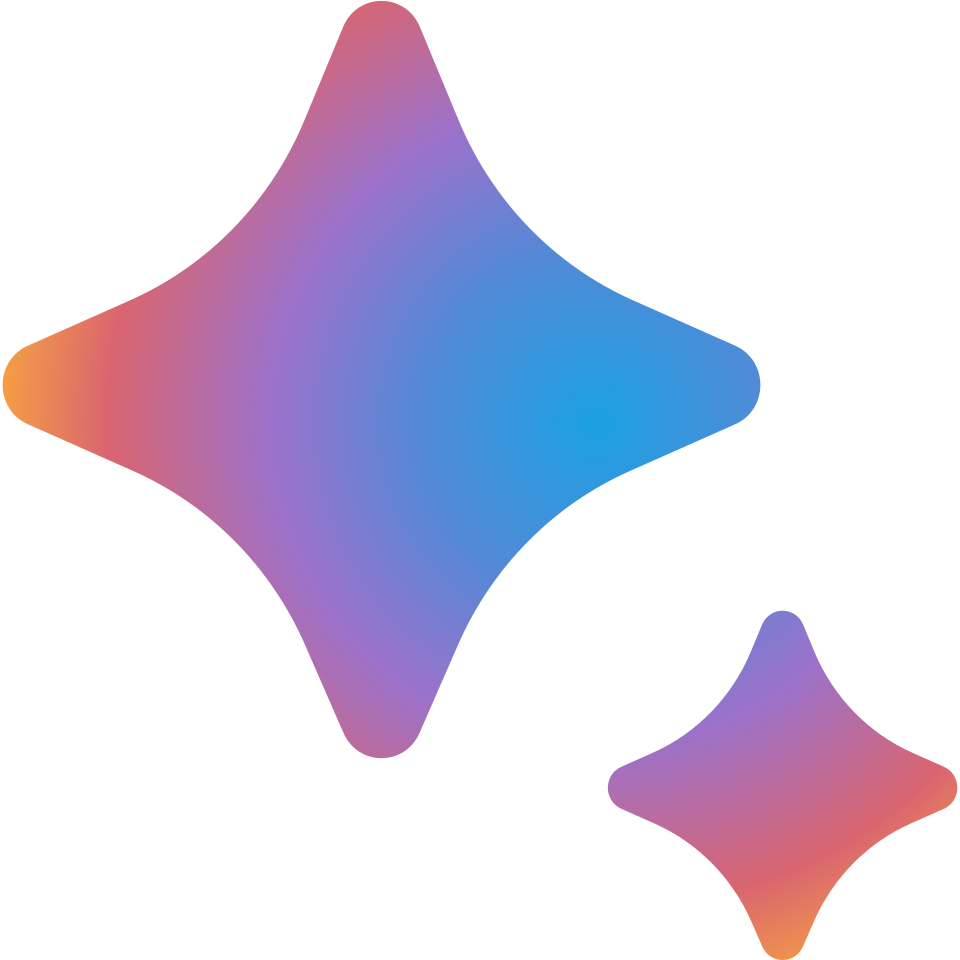
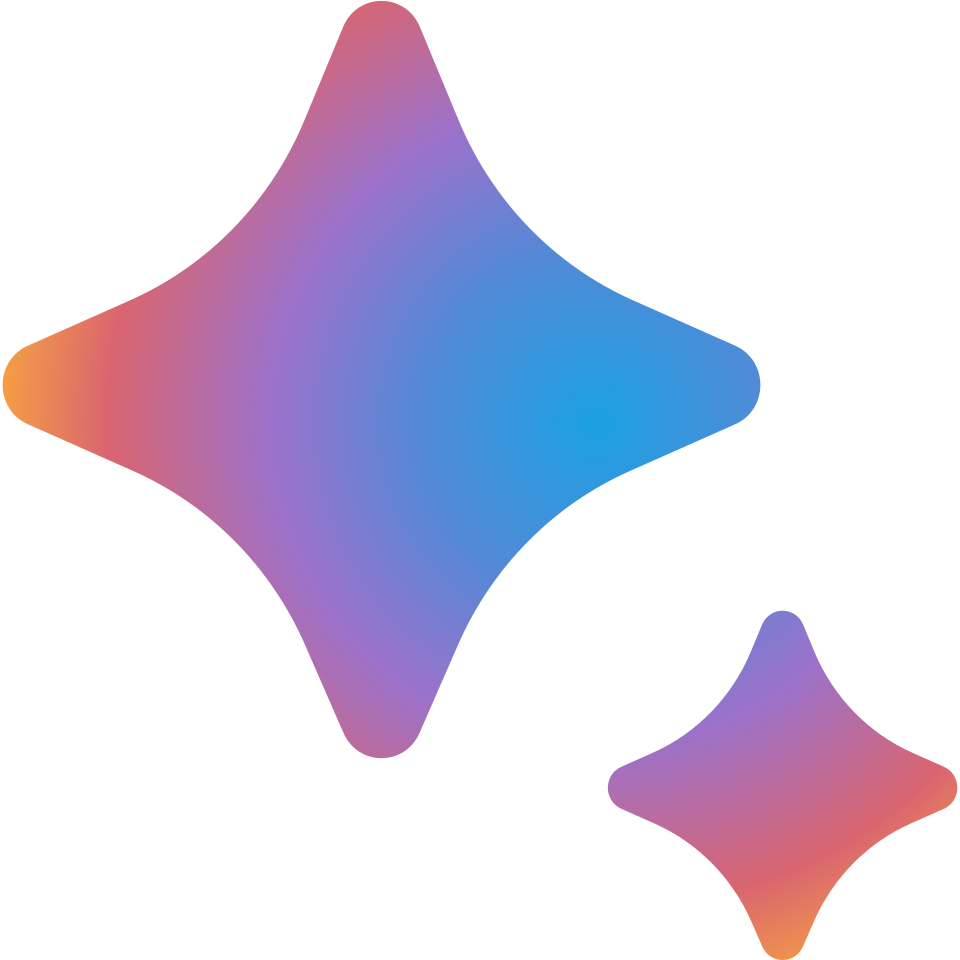
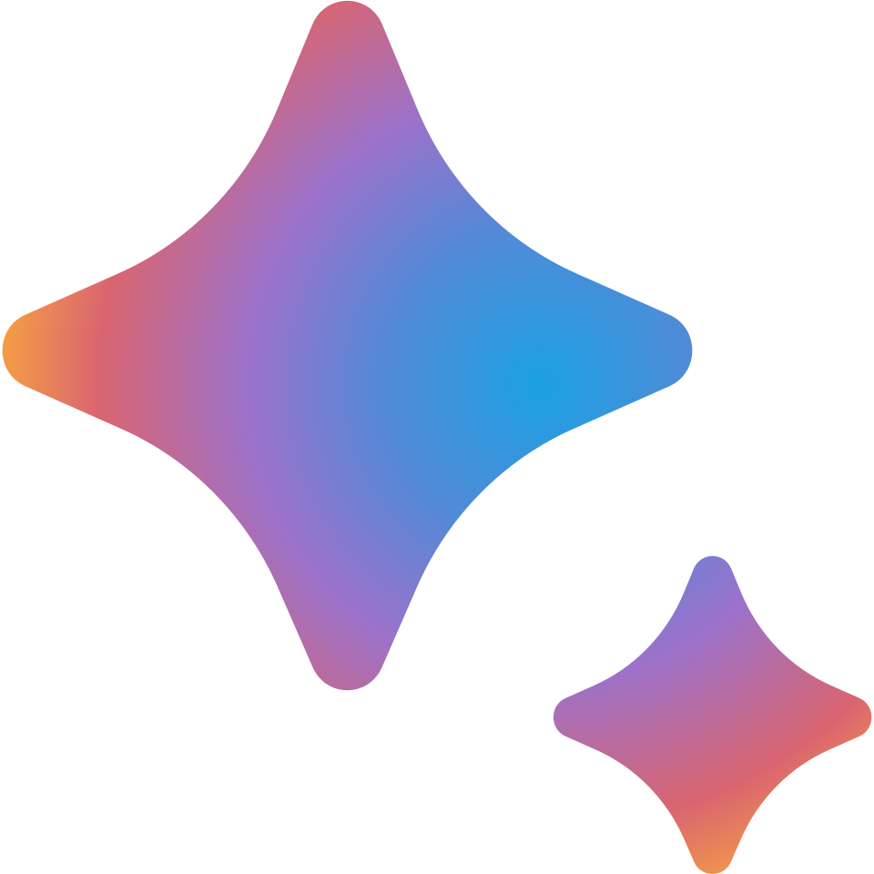

Plataformas y herramientas
Trabajamos con las principales plataformas de IA generativa, herramientas de datos y servicios en la nube.
 



Explora nuestras soluciones para impulsar tu organización
Diseñamos y construimos tableros dinámicos con herramientas líderes como Power BI, Looker y Tableau. Nuestros dashboards permiten monitorear KPIs en tiempo real y descubrir oportunidades ocultas en tus datos.
Aplicamos modelos predictivos y de machine learning para anticipar tendencias, optimizar operaciones y estimar comportamientos futuros con bases estadísticas sólidas.
Acompañamos a directivos y ejecutivos en la toma de decisiones estratégicas respaldadas por datos, proporcionando recomendaciones accionables y medición de impacto.
Desarrollamos chatbots y asistentes virtuales que interactúan en lenguaje natural para mejorar el soporte al cliente y automatizar procesos de atención.
Ofrecemos talleres y capacitaciones para estudiantes, investigadores y profesionales que buscan fortalecer sus habilidades en analítica de datos y herramientas de visualización.
Trabajamos con las principales plataformas de IA generativa, herramientas de datos y servicios en la nube.
